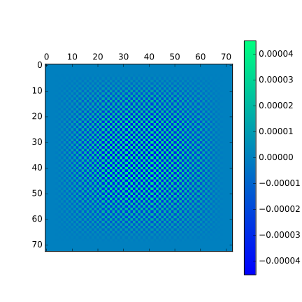

The PDE solved here are the Navier-Stokes equations(NSE) for incompressible flow. The NSE are reproduced here:
\[\dot{\vec{u}} = -(\vec{u}\cdot\nabla)\vec{u} + \nu \nabla^2 \vec{u}-\vec{\nabla}p\]
The incompressible flow condition gives another equation:
\[\vec{\nabla}\cdot u = 0\]
The discretization is done on a staggered grid with arrangement of velocities and pressure variables as shown below.
Figure: Varible arrangement.
We use pressure correction scheme as given in this paper by N. Hasan and S. Sanghi. The paper discusses pressure correction scheme on a collocated grid and introduces staggering in the step of calculation of pressure correction by using Rhie and Chow momentum interpolation (see eqn. 17) of the paper. We step this step for calculation on a staggered grid. The scheme can be summarized as follows:
\[\vec{u}^{n}_p = \vec{u}^n + \delta t\left[\nu \nabla^2 \vec{u}^n -\left(\vec{u}^n\cdot\vec{\nabla}\right)\vec{u}^n \right]\]
\[\vec{u}^{n+1}_b = \vec{u}^{n}_p - \delta t \vec{\nabla} p^n\]
\[\nabla^2p^\prime = \frac{\vec{\nabla}\cdot\vec{u}^{n+1}_b}{\delta t}\]
\[p^{n+1} = p^{n} + p^{\prime}\]
\[\vec{u}^{n+1} = \vec{u}_b^{n+1} - \delta t \vec{\nabla}p^{\prime}\]
For discretization of the derivatives we use the following approximations:
\(\vec{\nabla} p^n\), \(\vec{\nabla} p^\prime\): The derivatives are to be calculated at cell boundaries using data at cell centers. A central differencing stencil with the values available at \(\left(\pm\frac{\Delta x}{2}, \pm\frac{\Delta y}{2}\right)\) is used.
\(\vec{\nabla}\cdot\vec{u}_b^{n+1}\): The derivatives are calculated at the cell centers using the velocity values at \(\left(\pm\frac{\Delta x}{2}, \pm\frac{\Delta y}{2}\right)\) using central differencing. There is enough data to calculate all derivatives as there are no values to be calculated on the wall.
\(\left(\vec{u}^n\cdot\vec{\nabla}\right)\vec{u}^n\): The velocity values that are not available at the required location are interpolated. First order upwind differencing is used if absolute cell Peclet number is greater than 2, otherwise central differencing is used.
\(\nu \nabla^2 \vec{u}^n\): Second order central differencing is used everywhere except at the walls where second order upwind differencing is used.
Using this scheme we simulate the lid driven cavity in 2D and we get the following velocity field at Re=100 and mesh dimension [65 x 65]. The results are plotted here:
Figure: Lid-driven cavity simulation on uniform staggered grid
I was able to get rid of the divergence peaks by removing derivative interpolations from the code. (In the earlier version I used to calculate pressure gradients at the cell centers and interpolate them to the boundaries.) The divergence is small but it shows a checkerboard pattern. I don't know if this is a reason for concern. Does this mean that the equations are satisfying the zero divergence condition in only a global sense?
.
For solving on non-uniform grids we use the same computational method but work in transformed \((\xi, \eta)\) coordinates. The forms of derivatives in transformed coordinates is changed and thus the PDE's are modified and given extra terms.
We use \((\xi, \eta)\) that make the grid points cluster near the boundaries. These transforms are taken from the presentation by Fahad sir (slide 25). The transforming function is reproduced here (Same function is used for both x and y directions):
\[2\xi = 1-\frac{ln\frac{\left(\beta+\frac{2y}{H}-1\right)}{\left(\beta-\frac{2y}{H}+1\right)}}{ln\frac{\beta+1}{\beta-1}}\label{wallclustering}\]
The NSE in transformed coordinates is taken from this paper by N. Hasan, S. F. Anwar and S. Sanghi (eqn. 28 and 29 in the paper). The transformed PDE's are reproduced here:
\[\frac{\partial u}{\partial t} + u^\xi\frac{\partial u}{\partial \xi} + u^\eta\frac{\partial u}{\partial \eta} = -\left(\frac{y_\eta}{J}\frac{\partial p}{\partial \xi}-\frac{y_\xi}{J}\frac{\partial p}{\partial \eta}\right) + \nu\left(\alpha \frac{\partial^2 u}{\partial \xi^2} -2\beta\frac{\partial^2 u}{\partial \xi \partial \eta} + \gamma \frac{\partial^2 u}{\partial \eta^2}\right)\]
\[\frac{\partial v}{\partial t} + u^\xi\frac{\partial v}{\partial \xi} + u^\eta\frac{\partial v}{\partial \eta} = -\left(-\frac{x_\eta}{J}\frac{\partial p}{\partial \xi}+\frac{x_\xi}{J}\frac{\partial p}{\partial \eta}\right) + \nu\left(\alpha \frac{\partial^2 v}{\partial \xi^2} -2\beta\frac{\partial^2 v}{\partial \xi \partial \eta} + \gamma \frac{\partial^2 v}{\partial \eta^2}\right)\]
However, Fahad sir told me that this paper has made some approximation due to which some linear terms have dropped out from the expansion of laplacian. Therefore we added two extra terms to the laplaciane taken from Fahad sir's thesis. I am not sure if I am allowed to give the link to Fahad sir's thesis so I am just reproducing the final form of the NSE here:
\[\frac{\partial u}{\partial t} + u^\xi\frac{\partial u}{\partial \xi} + u^\eta\frac{\partial u}{\partial \eta} = -\left(\frac{y_\eta}{J}\frac{\partial p}{\partial \xi}-\frac{y_\xi}{J}\frac{\partial p}{\partial \eta}\right) + \nu\left(\alpha \frac{\partial^2 u}{\partial \xi^2} -2\beta\frac{\partial^2 u}{\partial \xi \partial \eta} + \gamma \frac{\partial^2 u}{\partial \eta^2} + \omega\frac{\partial u}{\partial \xi}+\phi\frac{\partial u}{\partial \eta}\right)\]
\[\frac{\partial v}{\partial t} + u^\xi\frac{\partial v}{\partial \xi} + u^\eta\frac{\partial v}{\partial \eta} = -\left(-\frac{x_\eta}{J}\frac{\partial p}{\partial \xi}+\frac{x_\xi}{J}\frac{\partial p}{\partial \eta}\right) + \nu\left(\alpha \frac{\partial^2 v}{\partial \xi^2} -2\beta\frac{\partial^2 v}{\partial \xi \partial \eta} + \gamma \frac{\partial^2 v}{\partial \eta^2} + \omega\frac{\partial v}{\partial \xi}+\phi\frac{\partial v}{\partial \eta}\right)\]
Here the values of \(J, \alpha, \beta, \gamma, \omega, \phi, u^\xi, u^\eta\) are: \[\alpha = \frac{y^2_\eta + x^2_\eta}{J^2} \label{alpha}\] \[\beta = \frac{y_\eta y_\xi + x_\eta x_\xi}{J^2}\] \[\gamma = \frac{y^2_\xi + x^2_\eta}{J^2}\] \[J = x_\xi y_\eta -x_\eta y_\xi\] \[u^\xi = \frac{y_\eta}{J}u - \frac{x_\eta}{J}v\] \[u^\eta = -\frac{y_\xi}{J}u + \frac{x_\xi}{J}v\] \[\omega = \nabla_{xy}^2\xi\] \[\phi = \nabla_{xy}^2 \eta\]
With the transformed PDE's we apply the same pressure correction scheme as on the uniform grid. We use \(u^\xi\) and \(u^\eta\) for upwinding. The poisson solver uses Gauss-Seidel'ish approach with the expanded second derivative operator. I am not sure if this is correct (The Gauss-Seidel method works only if the spectral radius of laplacian operator is less than 1. I don't know if this holds in the transformed coordinates. Nevertheless, the poisson solver converges in finite time which must mean that this condition is satisfied).
We apply two types of grid transformations to check the solver.
As a priliminary check we apply the identity transform i.e. (\(\xi=x\) and \(\eta=y\)) in our solver. In this case we get the same solution as on the uniform grid. These results are plotted here:
Figure: Solution on identity transform grid.
Now we apply the wall clustering transform from eqn.(\(\ref{wallclustering}\)) to the coordinates and the solver blows up after a few steps. The transformed grid is shown below:
Figure: non-uniform grid
The solution plotted below is on a non-uniform grid of dimensions [129 x 129].
Figure: non-uniform grid results
For poisson solver we use Jacobi Iteration. This is an iterative method that converges, given the spectral radius of the operator (the laplacian in this case) is less than 1. I have not checked what the spectral radius is for the laplacian operator in the transformed coordiantes. However the solver converges in finite number of steps, which I assume implies that the spectral radius must be less than 1.
The laplacian in transformed coordinates is: \[\nabla^2 = \left(\alpha \frac{\partial^2 }{\partial \xi^2} -2\beta\frac{\partial^2 }{\partial \xi \partial \eta} + \gamma \frac{\partial^2 }{\partial \eta^2} + \omega\frac{\partial }{\partial \xi}+\phi\frac{\partial }{\partial \eta}\right)\]
where the values of the coefficients are defined earlier starting from eqn. (\(\ref{alpha}\)).
To solve the poisson equation we discretize the derivatives using central differences and the coefficients are evaluated analytically. In this case, as seen from eqn.(\(\ref{wallclustering}\)), the value of \(\beta\) is zero everywhere so we drop that term.
\[\nabla^2 = \left(\alpha \frac{\partial^2 }{\partial \xi^2} + \gamma \frac{\partial^2 }{\partial \eta^2} + \omega\frac{\partial }{\partial \xi}+\phi\frac{\partial }{\partial \eta}\right)\]
Then discretizing the derivatives and noticing that \(\Delta \xi = \Delta \eta = \Delta\) we get:
\[\nabla^2 f= \left(\alpha \frac{f_{i+1} -2f_i + f_{i-1}}{\Delta^2} + \gamma \frac{f_{j+1} -2f_j + f_{j-1}}{\Delta^2} + \omega\frac{f_{i+1}-f_{i-1} }{2\Delta}+\phi\frac{f_{j+1}-f_{j-1}}{ 2\Delta}\right)\]
So in order to solve for the poisson equation: \[\nabla^2 f = \rho\]
We use the following (noting that \(f_i=f_j=f_{i,j}\)): \[\left(\alpha \frac{f_{i+1} -2f_i + f_{i-1}}{\Delta^2} + \gamma \frac{f_{j+1} -2f_j + f_{j-1}}{\Delta^2} + \omega\frac{f_{i+1}-f_{i-1} }{2\Delta}+\phi\frac{f_{j+1}-f_{j-1}}{ 2\Delta}\right)=\rho_{i,j}\]
\[2\left(\alpha+\gamma\right)f_{i,j}=\Delta^2\left(\alpha \frac{f_{i+1} + f_{i-1}}{\Delta^2} + \gamma \frac{f_{j+1} + f_{j-1}}{\Delta^2} + \omega\frac{f_{i+1}-f_{i-1} }{2\Delta}+\phi\frac{f_{j+1}-f_{j-1}}{ 2\Delta}\right)-\Delta^2\rho_{i,j}\]
\[f_{i,j}=\left(\alpha \frac{f_{i+1} + f_{i-1}}{2\left(\alpha+\gamma\right)} + \gamma \frac{f_{j+1} + f_{j-1}}{2\left(\alpha+\gamma\right)} + \omega\Delta\frac{f_{i+1}-f_{i-1} }{4\left(\alpha+\gamma\right)}+\phi\Delta\frac{f_{j+1}-f_{j-1}}{ 4\left(\alpha+\gamma\right)}\right)-\frac{\Delta^2}{2\left(\alpha+\gamma\right)}\rho_{i,j}\]
Now, we use this expression in jacobi iteration to get the solution for \(f_{i,j}\).